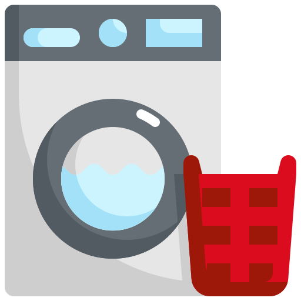

Saving water in the Kitchen
Kitchens consume over a fifth (22%) of a household's water.
Doing the Dishes
A dishwasher on an eco setting can be more efficient than washing dishes by hand, if the dishwasher is totally full. However, recent research has found that only half of people say they use the eco setting.
- Try to buy a dishwasher with a capacity suitable for your household size, so that it's always full when you use it.
- Experiment with the settings on your dishwasher, many modern machines offer 'Eco' or 'Economy' setting.
- Avoid pre-rinsing dishes, detergents are highly effective, so all you need to do is simply scrape and place. Easy.
- Try adding a washing up bowl or plug into your sink to catch excess. This can reduce water wastage by 50%.
- Adding a tap aerator can help to reduce the flow, similar to the shower.

Laundry
- Surveys show that a typical load of washing is usually much less than the maximum capacity of the model, so stuff in a few extra shirts to make the most of your loads!
- When buying a washing machine, check the label or specifications for water use, the best models will typically use less than 7.5 litres per kg.
- Read the manual to find out which cycles are the most water-efficient.
Drink Enough Water
- Surveys show that a typical load of washing is usually much less than the maximum capacity of the model, so stuff in a few extra shirts to make the most of your loads!
- When buying a washing machine, check the label or specifications for water use, the best models will typically use less than 7.5 litres per kg.
- Read the manual to find out which cycles are the most water-efficient.